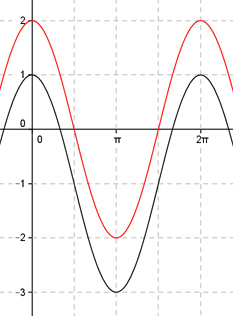

Aufgabe 267 Bestimmen Sie a und d für den dargestellten Graphen der Form y = a * cos b * (x + c) + d.  Abgelesen: Periode p = 2п --> 2п 2п |b| = ---- = ---- = 1 oder -1 wegen cos(x) = cos(-x) p 2п acos(x + c) + d oder acos(x + c) + d Verschiebung von Punkt (0|0) in (0|-1) --> Abgelesen: Verschiebung entlang der y-Achse um -1--> d = -1 acos(x + c) - 1 oder acos(x + c) - 1 Abgelesen: Keine Verschiebung entlang der x-Achse --> c = 0 acos(x) - 1 oder acos(-x) - 1 Abgelesen: |a| = 2 Keine Spiegelung an der x-Achse --> a = 2 --> y = 2cos(x) - 1 oder y = 2cos(-x) - 1 Zum Vergleich: 2cos(x)